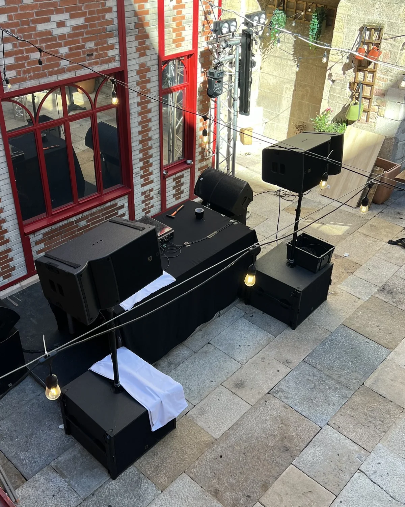
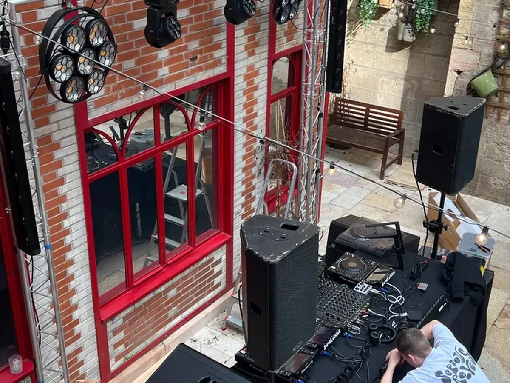
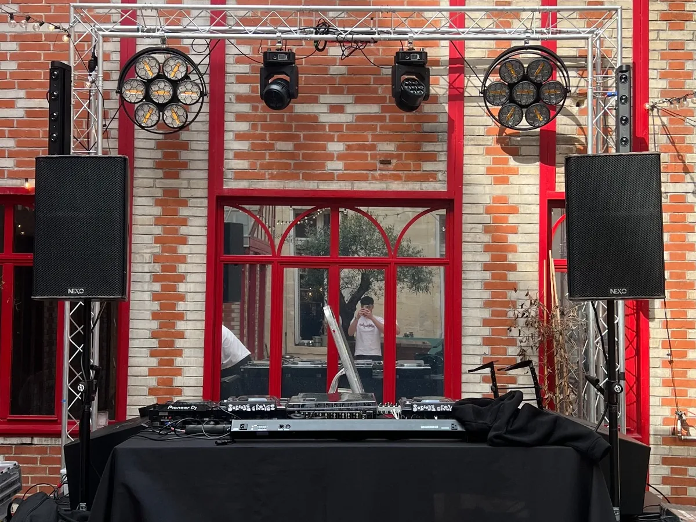
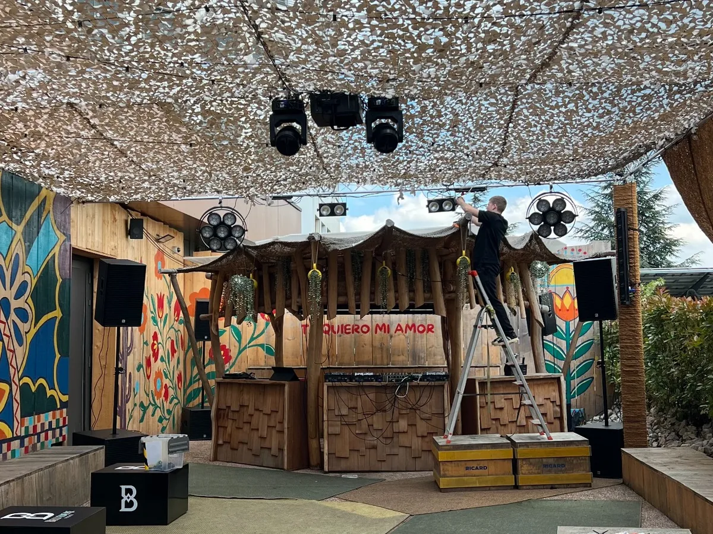
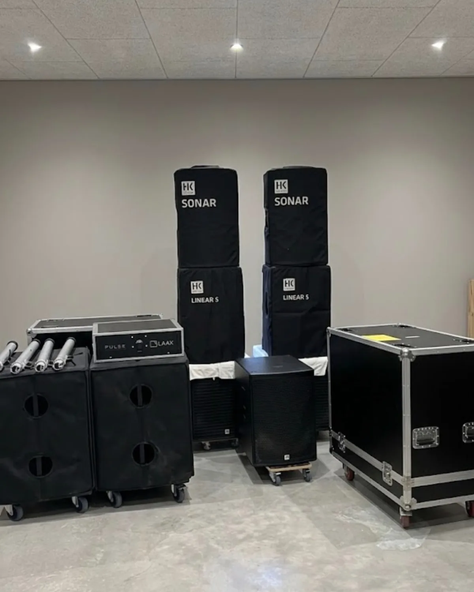
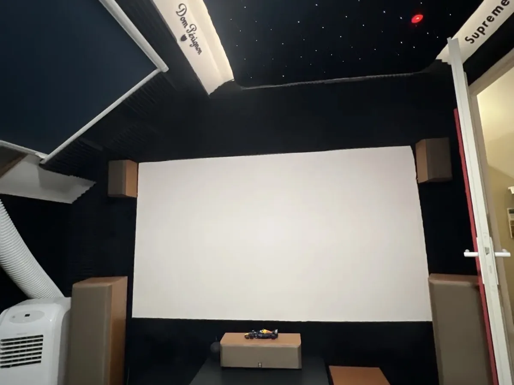

Installation cour intérieure
Système son, régie DJ et lumière pour événement en extérieur maîtrisé.
Quelques exemples de configurations, de préparations et de mises en place pour illustrer les prestations possibles.

Système son, régie DJ et lumière pour événement en extérieur maîtrisé.

Préparation, câblage et implantation avant ouverture.

Système puissant pour événement avec besoin de couverture.

Diffusion son avec éclairage d’ambiance.

Matériel préparé, rangé et transportable.

Modules scène en flight avec pieds et accessoires.

Exemple d’installation audiovisuelle et mise en ambiance.